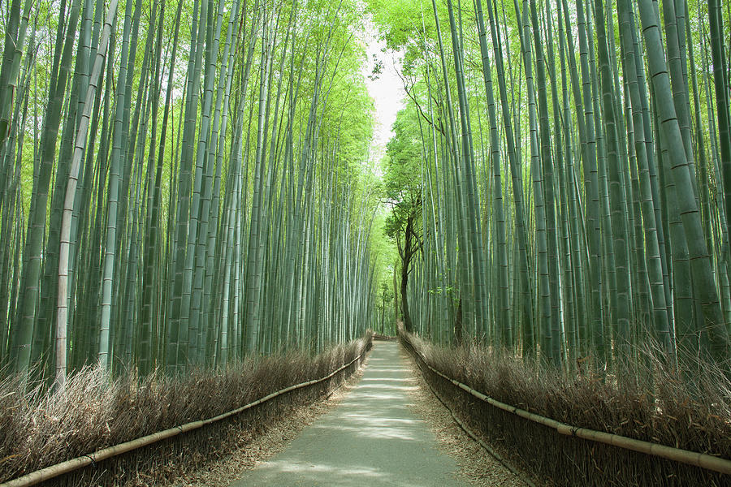
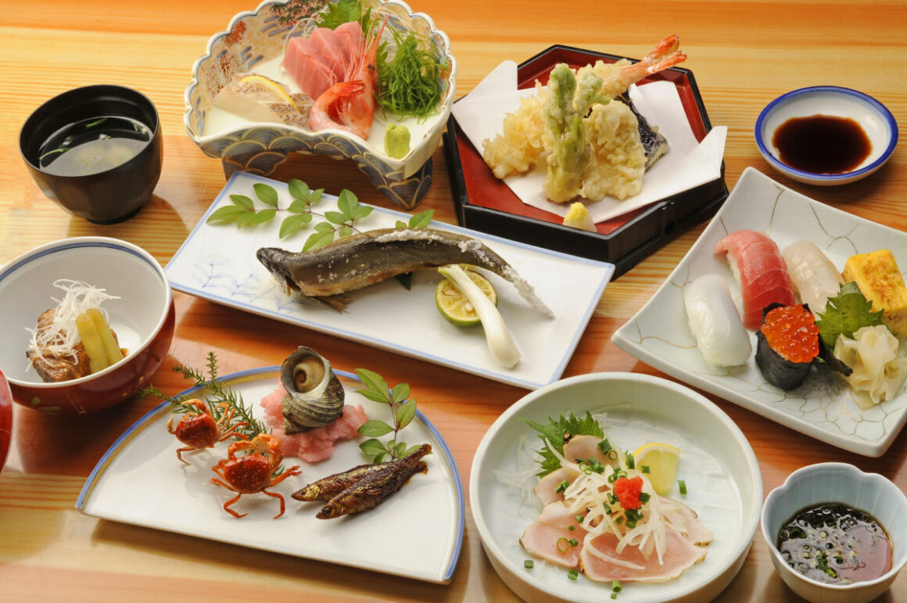

Kyoto, Japan has old streets, temples, and quiet gardens. It’s really good for photos and slow walks with family, friends, or a partner.
Welcome!
Kyoto is in the Kansai region of Japan. Most people usually like to visit in spring for the cherry blossoms or fall for the red leave folliage. You can ride the bullet train from Tokyo to Kyoto in about 2 hours and 15 minutes.
Quick Facts
- Best seasons to visit: Spring and Fall
- Best wau to get there: Shinkansen (bullet train). Nearest airport: KIX
- Areas to see: Gion, Arashiyama, Higashiyama
- Tip: Be quiet at the shrines and take off your shoes on tatami
Preview
Arashiyama Bamboo - You should go earlier in the day for fewer people.
Kaiseki Dinner - This is a small seasonal dishes in a lot of courses.